Retrack
Redesign de uma plataforma logística para gestão, rastreabilidade e acompanhamento do fluxo de ativos.
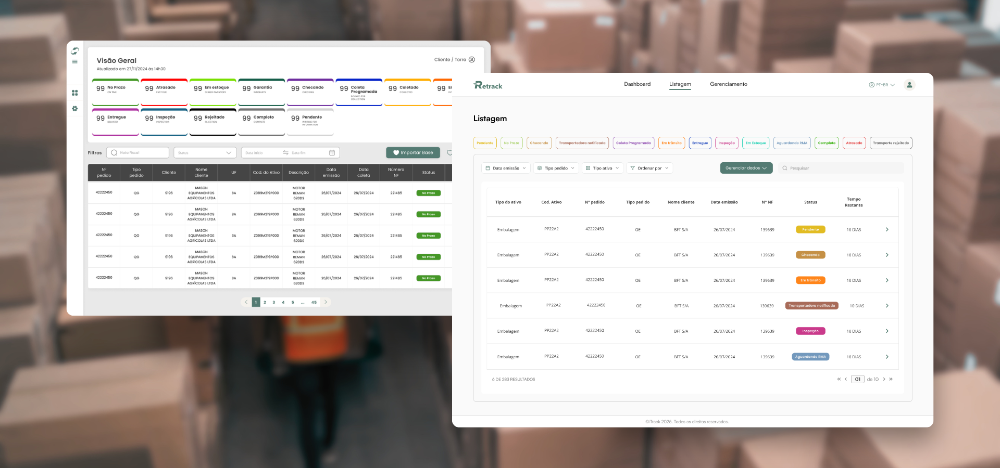
Visão geral
Retrack é uma solução digital da iTrack criada para apoiar empresas que lidam com grande volume de ativos em circulação, oferecendo mais rastreabilidade, automação e controle operacional ao longo da cadeia logística.
O projeto teve como objetivo redesenhar a experiência de um sistema operacional complexo, tornando a interface mais clara, escalável e adaptável para diferentes perfis de usuário e empresas clientes.
Atuei no redesign da plataforma, participando da análise do produto existente, estudo da operação, mapeamento dos fluxos, criação das interfaces, componentização e adaptação da solução para diferentes contextos de uso.
Uma operação logística com múltiplos atores, etapas e responsabilidades
A gestão do fluxo de ativos envolve diferentes participantes, como torre de controle, transportadoras, concessionários, clientes e áreas internas responsáveis pela operação.
Cada perfil precisava acessar informações específicas, realizar ações em momentos diferentes e acompanhar o status dos ativos ao longo da jornada.
O desafio
Organizar um sistema com alta complexidade operacional sem tornar a experiência pesada, confusa ou dependente de suporte constante.
Identificando oportunidades de melhoria na experiência existente
O sistema anterior já concentrava informações importantes para a operação, mas apresentava desafios de organização visual, hierarquia, escaneabilidade e consistência entre telas.
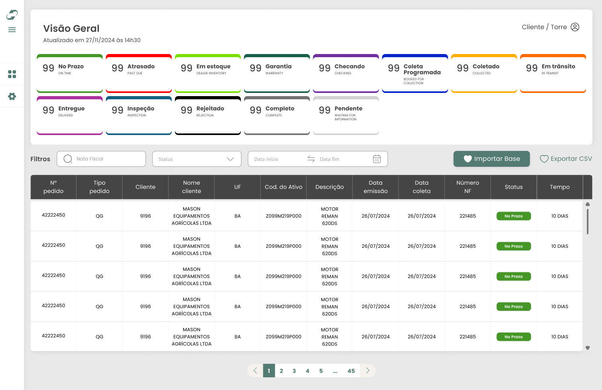
Interface anterior utilizada como ponto de partida para análise e redesign.
Do entendimento da operação à construção da nova experiência
Meu trabalho envolveu compreender regras de negócio, fluxos operacionais e necessidades de diferentes perfis de usuário para transformar esse contexto em uma plataforma mais intuitiva e escalável.
Desenhando para diferentes papéis dentro da operação
Uma das principais decisões do projeto foi estruturar a experiência a partir dos papéis envolvidos na cadeia logística. Cada perfil possui objetivos, permissões e responsabilidades diferentes dentro do fluxo.

Mapeamento de acesso para perfis vinculados à operação.
Organizando uma jornada com múltiplos status e cenários
A operação precisava contemplar diferentes estados do ativo, como no prazo, chegando, ajustes pendentes, coleta programada, coletado, em trânsito, entregue, inspeção, completo, atrasado, em estoque, rejeitado e garantia.
O redesign organizou esses status em uma lógica visual consistente, permitindo que cada usuário entendesse rapidamente o momento atual da operação e quais ações estavam disponíveis.
Decisão de design
Usei cores, filtros, tabs, tabelas e estados visuais para facilitar leitura rápida e tomada de decisão em cenários operacionais complexos.
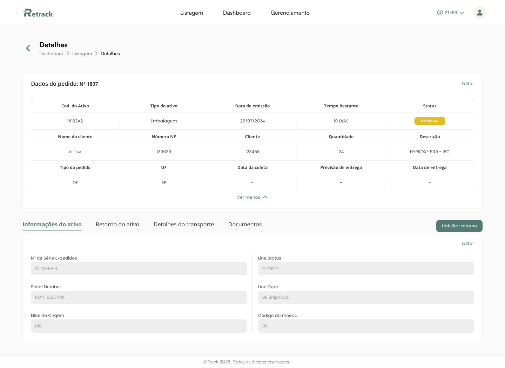
Fluxo da Torre de controle, com gerenciamento dos ativos e ações operacionais.
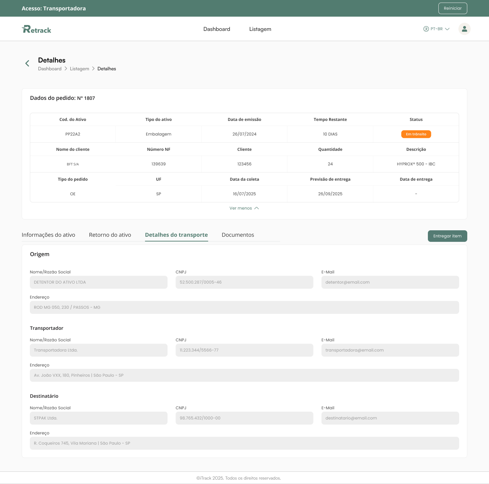
Fluxo da transportadora, com etapas de aprovação, coleta e entrega.
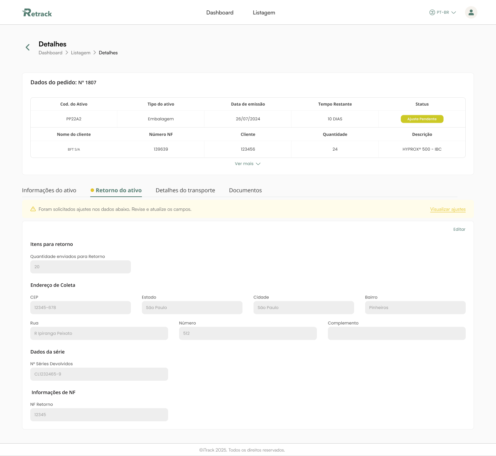
Fluxo do concessionário, incluindo retorno do ativo e acompanhamento.
Uma plataforma flexível para diferentes operações
O Retrack foi adaptado para diferentes empresas clientes, incluindo AGCO, Brenntag e AssetShift. Cada operação possuía particularidades de dados, nomenclaturas, etapas e responsabilidades.
No caso da Brenntag, por exemplo, foi necessário compreender informações vindas de planilhas de suporte, como tipo de ativo, código, pedido, nota fiscal, quantidade, cliente, dados de retorno e documentos envolvidos no processo.

Visão geral do fluxo e das adaptações da plataforma.
Mais clareza para acompanhar dados, status e ações
A interface foi redesenhada para melhorar a leitura de grandes volumes de informação, facilitar a filtragem por status e tornar as ações mais acessíveis para cada perfil de usuário.
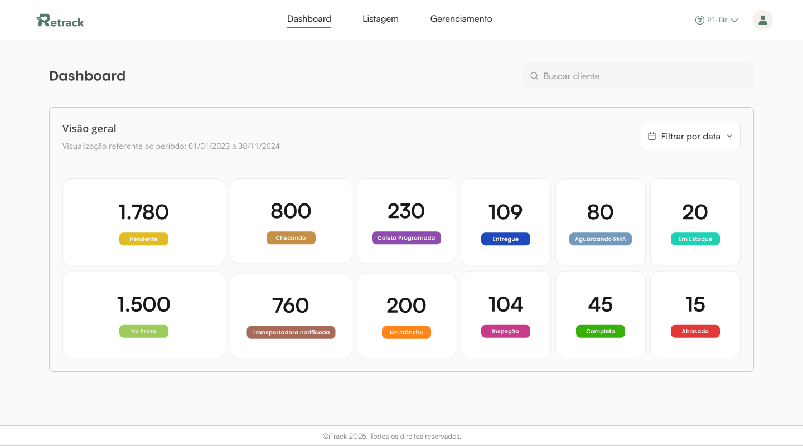
Dashboard com visão geral dos ativos e status da operação.
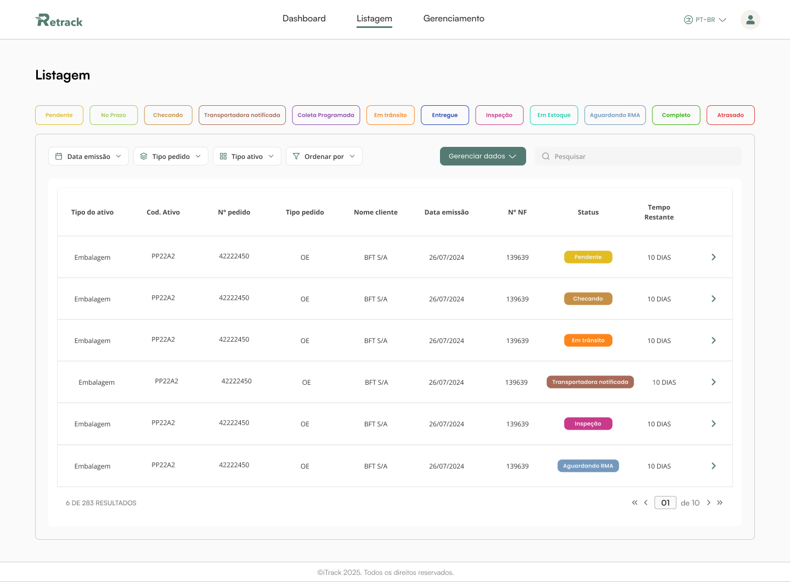
Listagem com filtros, tags de status e ações de acompanhamento.
Autenticação, perfil e administração da conta
Além dos fluxos principais da operação, também foram desenhadas telas de suporte à plataforma, como login, recuperação de senha, cadastro de perfil e edição de dados do usuário.
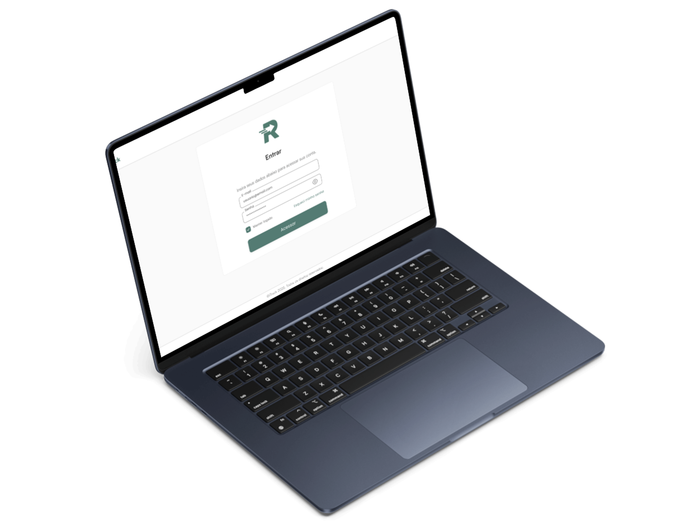
Fluxo de login, recuperação de senha e criação de acesso.
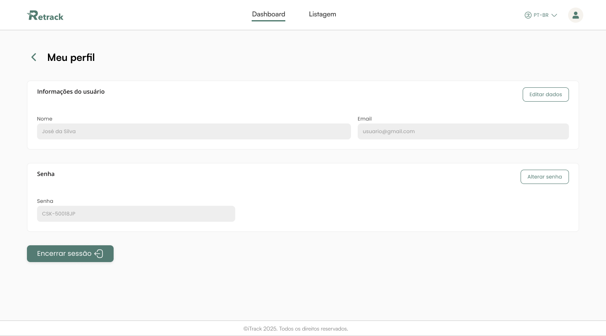
Fluxo de perfil com edição de e-mail, senha e encerramento de sessão.
Criando consistência para uma plataforma em expansão
Para sustentar a evolução do produto, organizei padrões visuais e componentes reutilizáveis, garantindo consistência entre diferentes fluxos, perfis e adaptações por cliente.
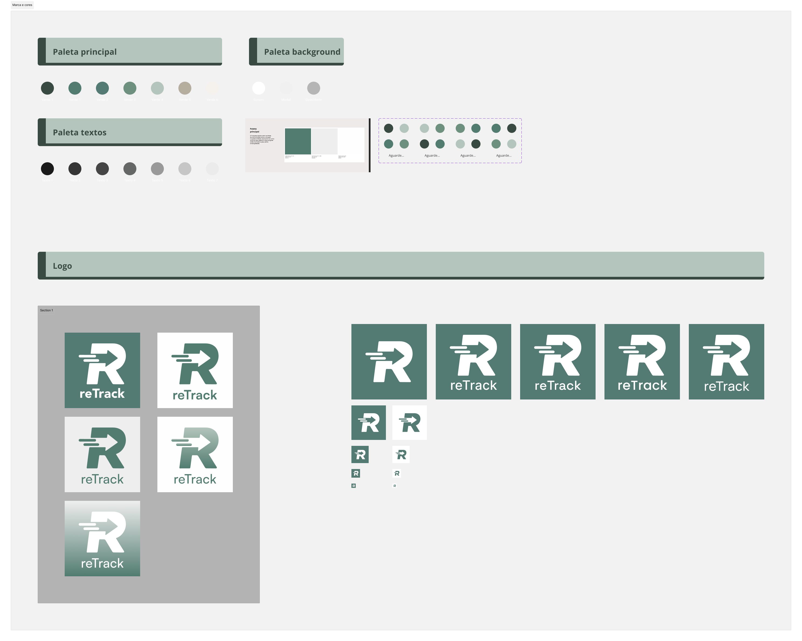
Estudos de marca, paleta de cores e variações do logo.
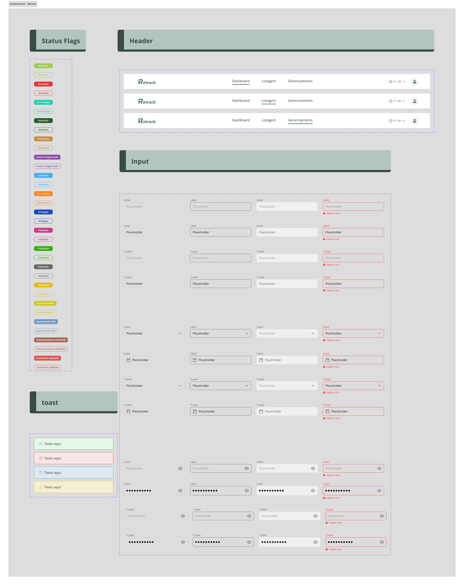
Componentes utilizados em filtros, tabelas, status, inputs e feedbacks.
Uma experiência mais clara para operações logísticas complexas
Transformação visual e estrutural de um sistema operacional complexo.
Fluxos adaptados para torre, transportadora, concessionário e clientes.
Base visual e funcional preparada para diferentes empresas e operações.
O que esse projeto fortaleceu na minha prática
O Retrack reforçou minha capacidade de atuar em produtos B2B complexos, onde a experiência precisa equilibrar clareza, eficiência operacional, regras de negócio e diferentes responsabilidades entre usuários.
Também foi um projeto importante para consolidar minha visão sobre redesign de sistemas legados, componentização e adaptação de uma mesma base de produto para diferentes clientes.
Outros projetos
Explore outros produtos e experiências que projetei.